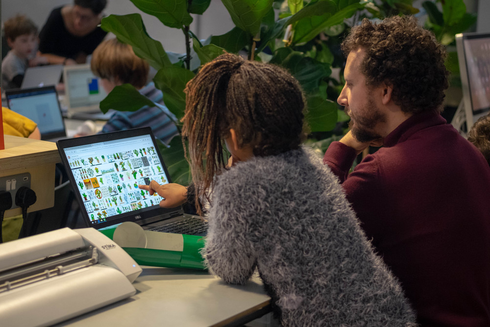
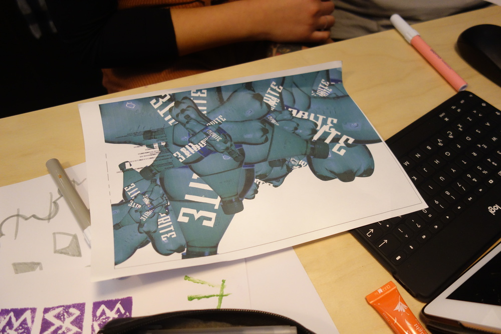

You Make the Rules was a one day event in Bristol, part of Processing Community Day 2019, with workshops, discussions, and performance celebrating software art. I worked as a producer, with a team of artists and technologists from Bristol to put on a programme of workshops and talks and an evening “Algorave” performance. I also lead a “Programming with Potatoes” workshop for families.

Collaborating team: Martha King, Rod Dickinson, Coral Manton, Pete Bennett, Ellie Foreman, James Wood, Claire Morely, Luke Sweeney, Dave Webb, Steve Battle.




Supported by: UWE, KWMC, Cube Cinema, Framework